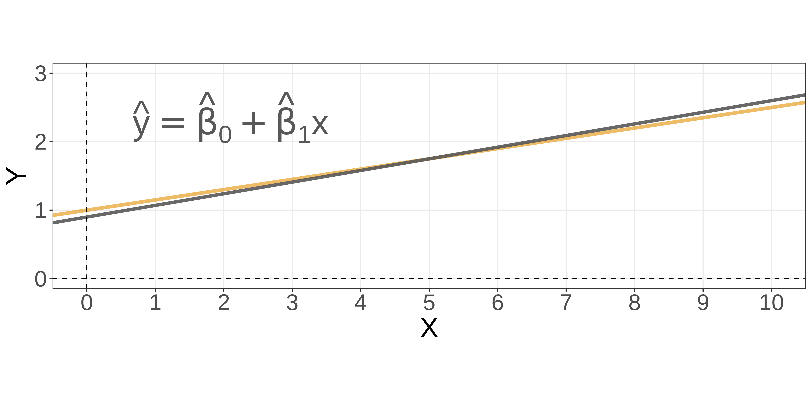
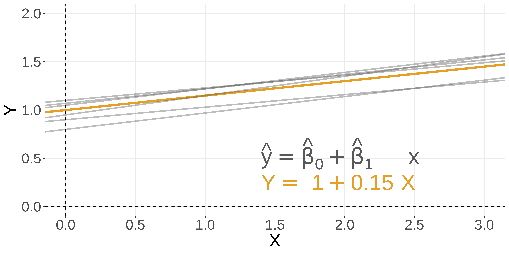
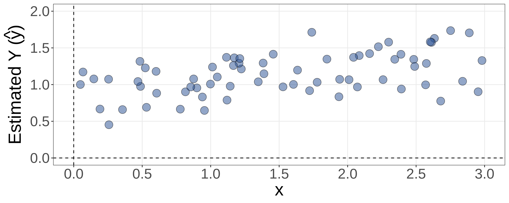
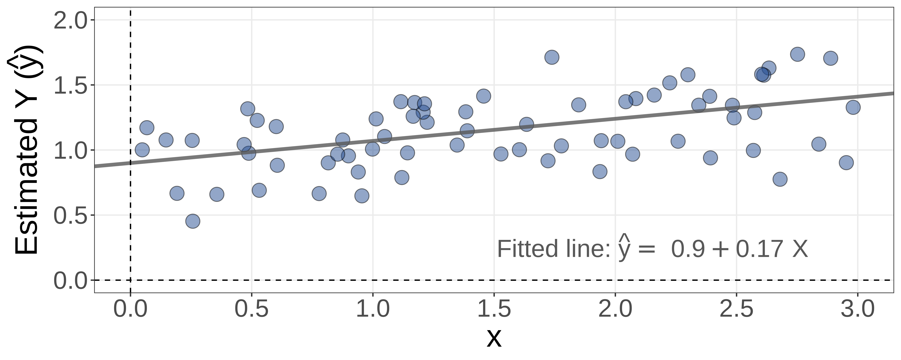
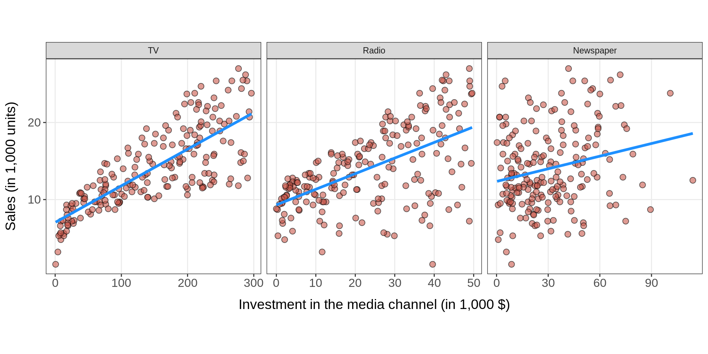
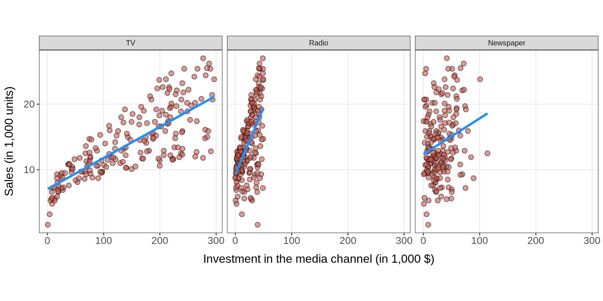

🗓️ Week 02: Linear Regression
DS202 Data Science for Social Scientists
07 October 2022
What is Linear Regression
The basic models
Linear regression is a simple approach to supervised learning.
The generic supervised model:
\[ Y = \operatorname{f}(X) + \epsilon \]
is defined more explicitly as follows ➡️
Simple linear regression
\[ \begin{align} Y = \beta_0 +& \beta_1 X + \epsilon, \\ \\ \\ \end{align} \]
when we use a single predictor, \(X\).
Multiple linear regression
\[ \begin{align} Y = \beta_0 &+ \beta_1 X_1 + \beta_2 X_2 \\ &+ \dots \\ &+ \beta_p X_p + \epsilon \end{align} \]
when there are multiple predictors, \(X_p\).
Warning
- True regression functions are never linear!
- Although it may seem overly simplistic, linear regression is extremely useful both conceptually and practically.
Regression coefficients
Linear Regression with a single predictor
We assume a model:
\[ Y = \beta_0 + \beta_1 X + \epsilon , \]
where:
- \(\beta_0\): an unknown constant that represents the intercept of the line.
- \(\beta_1\): an unknown constant that represents the slope of the line
- \(\epsilon\): the random error term (irreducible)
Linear Regression with a single predictor
We want to estimate:
\[ \hat{y} = \hat{\beta_0} + \hat{\beta_1} x \]

where:
- \(\hat{y}\): is a prediction of \(Y\) on the basis of \(X = x\).
- \(\hat{\beta_0}\): is an estimate of the “true” \(\beta_0\).
- \(\hat{\beta_1}\): is an estimate of the “true” \(\beta_1\).
Different estimators, different equations
There are multiple ways to estimate the coefficients.
- If you use different techniques, you might get different equations
- The most common algorithm is called
Ordinary Least Squares (OLS) - Just to name a few other estimators (Karafiath 2009):
- Least Absolute Deviation (LAD)
- Weighted Least Squares (WLS)
- Generalized Least Squares (GLS)
- Heteroskedastic-Consistent (HC) variants

Residual errors
To understand the Ordinary Least Squares method, we first need to understand the concept of residuals.
The concept of residuals
Suppose you came across some data:

The concept of residuals
So, you decide to fit a line to it.

The concept of residuals
Residuals are the distances from each data point to this line.

Residual Sum of Squares (RSS)
From this, we can define the Residual Sum of Squares (RSS) as
\[ \mathrm{RSS}= e_1^2 + e_2^2 + \dots + e_n^2, \]
or equivalently as
\[ \mathrm{RSS}= (y_1 - \hat{\beta}_0 - \hat{\beta}_1 x_1)^2 + (y_2 - \hat{\beta}_0 - \hat{\beta}_1 x_2)^2 + \dots + (y_n - \hat{\beta}_0 - \hat{\beta}_1 x_n)^2. \]
Note
The (ordinary) least squares approach chooses \(\hat{\beta}_0\) and \(\hat{\beta}_1\) to minimize the RSS.
A question for you

Why the squares and not, say, just the sum of residuals?
Image created with the DALL·E algorithm using the prompt: ‘35mm macro photography of a robot holding a question mark card, white background’
Ordinary Least Squares
How do we estimate the coefficients using the ordinary least squares algorithm?
The objective function
We treat this as an optimisation problem. We want to minimize RSS: \[ \begin{align} \min \mathrm{RSS} =& \sum_i^n{e_i^2} \\ =& \sum_i^n{\left(y_i - \hat{y}_i\right)^2} \\ =& \sum_i^n{\left(y_i - \hat{\beta}_0 - \hat{\beta}_1 x_i\right)^2} \end{align} \]
Estimating \(\hat{\beta}_0\)
To find \(\hat{\beta}_0\), we have to solve the following partial derivative:
\[ \frac{\partial ~\mathrm{RSS}}{\partial \hat{\beta}_0}{\sum_i^n{(y_i - \hat{\beta}_0 - \hat{\beta}_1 x_i)^2}} = 0 \]
… which will lead you to:
\[ \hat{\beta}_0 = \bar{y} - \hat{\beta}_1 \bar{x}, \]
where we made use of the sample means:
- \(\bar{y} \equiv \frac{1}{n} \sum_{i=1}^n y_i\)
- \(\bar{x} \equiv \frac{1}{n} \sum_{i=1}^n x_i\)
Estimating \(\hat{\beta}_1\)
Similarly, to find \(\hat{\beta}_1\) we solve:
\[ \frac{\partial ~\mathrm{RSS}}{\partial \hat{\beta}_1}{[\sum_i^n{y_i - \hat{\beta}_0 - \hat{\beta}_1 x_i}]} = 0 \]
… which will lead you to:
\[ \hat{\beta}_1 = \frac{\sum_{i=1}^n (x_i - \bar{x})(y_i - \bar{y})}{\sum_{i=1}^n (x_i-\bar{x})^2} \]
Parameter Estimation (OLS)
And that is how OLS works!
\[ \begin{align} \hat{\beta}_1 &= \frac{\sum_{i=1}^n (x_i - \bar{x})(y_i - \bar{y})}{\sum_{i=1}^n (x_i-\bar{x})^2} \\ \hat{\beta}_0 &= \bar{y} - \hat{\beta}_1 \bar{x} \end{align} \]
Estimates for Multiple Regression
The process of estimation is similar when we have more than one predictor. To estimate:
\[ \hat{y} = \hat{\beta}_0 + \hat{\beta}_1 x_1 + \hat{\beta}_2 x_2 + \dots + \hat{\beta}_p x_p. \]
We aim to minimize Residual Sum of Squares as before:
\[ \min \mathrm{RSS} = \sum_{i=1}^n (y_i - \hat{y}_i)^2 = \sum_{i=1}^n (y_i - \hat{\beta}_0 - \hat{\beta}_1 x_{i1} - \hat{\beta}_2 x_{i2} - \dots - \hat{\beta}_p x_{ip})^2. \]
This is done using standard statistical software — you need a good linear algebra solver.
The values \(\hat{\beta}_0, \hat{\beta}_1, \dots, \hat{\beta}_p\) that minimize RSS are the multiple least squares regression coefficient estimates.
Example: Advertising data
A sample of the data:
library(tidyverse)
file = "https://www.statlearning.com/s/Advertising.csv"
advertising <- read_csv(file) %>% select(-1)
head(advertising, 11)# A tibble: 11 × 4
TV radio newspaper sales
<dbl> <dbl> <dbl> <dbl>
1 230. 37.8 69.2 22.1
2 44.5 39.3 45.1 10.4
3 17.2 45.9 69.3 9.3
4 152. 41.3 58.5 18.5
5 181. 10.8 58.4 12.9
6 8.7 48.9 75 7.2
7 57.5 32.8 23.5 11.8
8 120. 19.6 11.6 13.2
9 8.6 2.1 1 4.8
10 200. 2.6 21.2 10.6
11 66.1 5.8 24.2 8.6How the data is spread:
Min. 1st Qu. Median Mean 3rd Qu. Max.
0.70 74.38 149.75 147.04 218.82 296.40 Min. 1st Qu. Median Mean 3rd Qu. Max.
0.000 9.975 22.900 23.264 36.525 49.600 Min. 1st Qu. Median Mean 3rd Qu. Max.
0.30 12.75 25.75 30.55 45.10 114.00 Relationship: advertising budget and sales
Is advertising spending related to sales?

Relationship: advertising budget and sales
Is advertising spending related to sales?

Simple linear regression models
- TV 📺
tv_model <- lm(sales ~ TV, data=advertising)
cat(sprintf("Sales (1k units) = %.4f %+.4f TV ($ 1k)\n",
tv_model$coefficients["(Intercept)"],
tv_model$coefficients["TV"]))Sales (1k units) = 7.0326 +0.0475 TV ($ 1k)- Radio 📻
- Newspaper 📰
newspaper_model <- lm(sales ~ newspaper, data=advertising)
cat(sprintf("Sales (1k units) = %.4f %+.4f Newspaper ($ 1k)\n",
newspaper_model$coefficients["(Intercept)"],
newspaper_model$coefficients["newspaper"]))Sales (1k units) = 12.3514 +0.0547 Newspaper ($ 1k)🗨️ How should we interpret these models?
Confidence Intervals
- If we were to fit a linear model from repeated samples of the data, we would get different coefficients every time.
- Because of the Central Limit Theorem, we know that the mean of this sampling distribution can be approximated by a Normal Distribution.
- We know from Normal Theory that 95% of the distribution lies in \([\mu - 2 \sigma, \mu + 2 \sigma]\).
A 95% confidence interval is defined as a range of values such that with 95% probability, the range will contain the true unknown value of the parameter.

Confidence Interval of coefficients
- The confidence interval of an estimate has the form: \[ \hat{\beta}_1 \pm 2 \times \mathrm{SE}(\hat{\beta}_1). \] where \(SE\) is the standard error and reflects how the estimate varies under repeated sampling.
- That is, there is approximately a 95% chance that the interval \[ \biggl[ \hat{\beta}_1 - 2 \times \mathrm{SE}(\hat{\beta}_1), \hat{\beta}_1 + 2 \times \mathrm{SE}(\hat{\beta}_1) \biggr] \] will contain the true value of \(\beta_1\).
Standard Errors
The standard error of \(\hat{\beta}_0\) and \(\hat{\beta}_1\) is shown below:
\[ \begin{align} \mathrm{SE}(\hat{\beta}_1)^2 &= \frac{\sigma^2}{\sum_{i=1}^n (x_i - \bar{x})^2}, \\ \mathrm{SE}(\hat{\beta}_0)^2 &= \sigma^2 \biggl[ \frac{1}{n} + \frac{\bar{x}^2}{\sum_{i=1}^n (x_i - \bar{x})^2} \biggr], \end{align} \]
where \(\sigma^2 = \operatorname{Var}(\epsilon)\).
- But, wait, we don’t know \(\epsilon\)! How would we compute \(\sigma^2\)?
- In practice, we aproximate \(\sigma^2 \approx \mathrm{RSE} = \sqrt{\mathrm{RSS}/(n-2)}\).
Important
💡 Standard errors are a type of standard deviation but are not the same! See (Altman and Bland 2005) for more on this.
Back to our Advertising linear models
What are the confidence intervals of our independent linear models?
- TV 📺
- Radio 📻
Hypothesis Testing
- Standard errors can also be used to perform hypothesis tests on the coefficients.
- The most common hypothesis test involves testing the null hypothesis of:
- \(H_0\): There is no relationship between \(X\) and \(Y\) versus the .
- \(H_A\): There is some relationship between \(X\) and \(Y\).
- Mathematically, this corresponds to testing:
\[ \begin{align} &~~~~H_0:&\beta_1 &= 0 \\ &\text{vs} \\ &~~~~H_A:& \beta_1 &\neq 0, \end{align} \]
since if \(\beta_1=0\) then the model reduces to \(Y = \beta_0 + \epsilon\), and \(X\) and \(Y\) are not associated.
p-values
- To test the null hypothesis, we compute a t-statistic, given by \[ t = \frac{\hat{\beta}_1 - 0}{\mathrm{SE}(\hat{\beta}_1)}, \] ::: incremental
- This will have a t-distribution1 with \(n - 2\) degrees of freedom, assuming \(\beta_1 = 0\).
- Using statistical software, it is easy to compute the probability of observing any value equal to \(\mid t \mid\) or larger.
- We call this probability the p-value. :::
Back to our Advertising linear models
How significant are the linear models?
- TV 📺
Coefficients:
Estimate Std. Error t value Pr(>|t|)
(Intercept) 7.032594 0.457843 15.36 <2e-16 ***
TV 0.047537 0.002691 17.67 <2e-16 ***
---
Signif. codes: 0 '***' 0.001 '**' 0.01 '*' 0.05 '.' 0.1 ' ' 1- Radio 📻
- Newspaper 📰
Coefficients:
Estimate Std. Error t value Pr(>|t|)
(Intercept) 12.35141 0.62142 19.88 < 2e-16 ***
newspaper 0.05469 0.01658 3.30 0.00115 **
---
Signif. codes: 0 '***' 0.001 '**' 0.01 '*' 0.05 '.' 0.1 ' ' 1🗨️ What does it mean?
What’s Next
After our 10-min break ☕:
- Metrics to assess goodness-of-fit
- Interpreting Multiple Linear Regression 📈
- Interaction effects
- Outliers
- Collinearity
- What will happen in our 💻 labs this week?
References
Altman, Douglas G, and J Martin Bland. 2005. “Standard Deviations and Standard Errors.” BMJ 331 (7521): 903. https://doi.org/10.1136/bmj.331.7521.903.
James, Gareth, Daniela Witten, Trevor Hastie, and Robert Tibshirani. 2021. An Introduction to Statistical Learning: With Applications in R. Second edition. Springer Texts in Statistics. New York NY: Springer. https://www.statlearning.com/.
Karafiath, Imre. 2009. “Is There a Viable Alternative to Ordinary Least Squares Regression When Security Abnormal Returns Are the Dependent Variable?” Review of Quantitative Finance and Accounting 32 (1): 17–31. https://doi.org/10.1007/s11156-007-0079-y.

DS202 - Data Science for Social Scientists 🤖 🤹